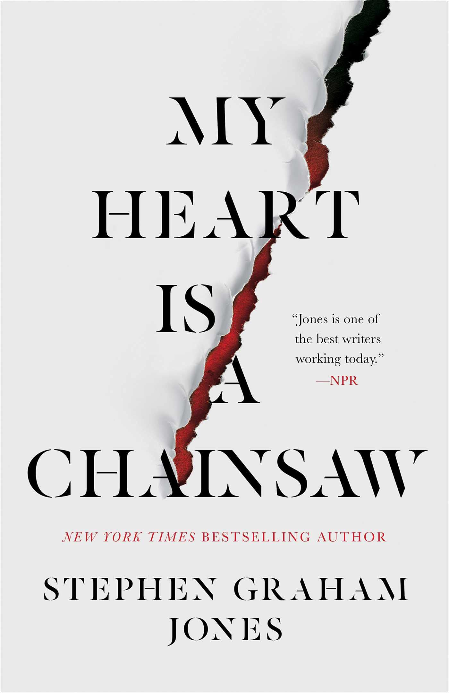

PSYCHOLOGICAL
El terror psicológico se centra en la explotación de los miedos y obsesiones del subconsciente. Es uno de los subgéneros más populares del cine y la literatura.
Cine: Psicosis
La perturbadora historia de Norman Bates y el misterioso motel Bates, donde nada es lo que parece.
Cine: El Resplandor
El aislamiento y la locura consumen a Jack Torrance mientras cuida un hotel aparentemente embrujado.
Cine: Cisne Negro
Una bailarina cae en una espiral de obsesión, paranoia y pérdida de la realidad.
Cine: Shutter Island
Un detective investiga una desaparición en un hospital psiquiátrico, descubriendo oscuros secretos.

Libro: Psicosis
La novela de Robert Bloch que inspiró la legendaria película de Alfred Hitchcock.
Libro: El coleccionista
Una inquietante historia de obsesión, secuestro y manipulación psicológica.

Libro: American Psycho
Patrick Bateman es un exitoso ejecutivo cuya mente oculta impulsos violentos y perturbadores.

Libro: My Heart Is a Chainsaw
Una joven obsesionada con el cine de terror cree reconocer el inicio de una auténtica masacre en su pueblo.